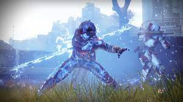
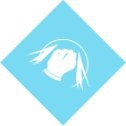
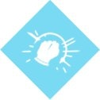
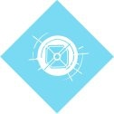
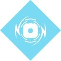

The Arc subclass is considered the worst subclass for Hunters, but it is the easiest to use. A Hunter that uses Arc is called an Arcstrider. This subclass is all about speed, agression, and using your body for a weapon. There is one super to choose from. Arc Staff — Form a staff of pure Arc energy and acrobatically take out your foes.
There are three melee abilities to choose from.
Combination Blow — Kill an enemy with this melee ability to trigger health regeneration and increase your melee damage temporarily.
Tempest Strike — After sliding, activate this melee ability to unleash a devastating uppercut attack.
Disorienting Blow — Strike an enemy with this melee ability to disorient the target and nearby enemies.
There are also three basic grenades to choose from.
Skip Grenade — A grenade that splits upon impact, creating multiple projectiles that seek enemies.
Flux Grenade — An explosive grenade that deals additional damage when attached to enemies.
Arcbolt Grenade — A grenade that chains bolts of lightning to nearby enemies.
Visit Ikora Rey in the Tower to unlock more grenades.